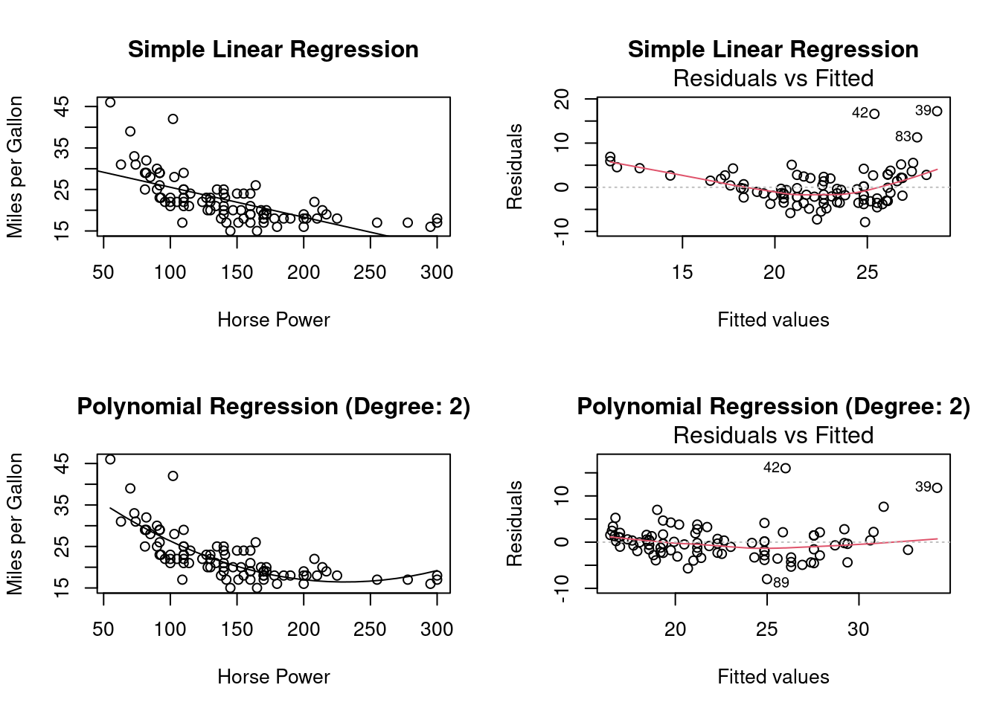
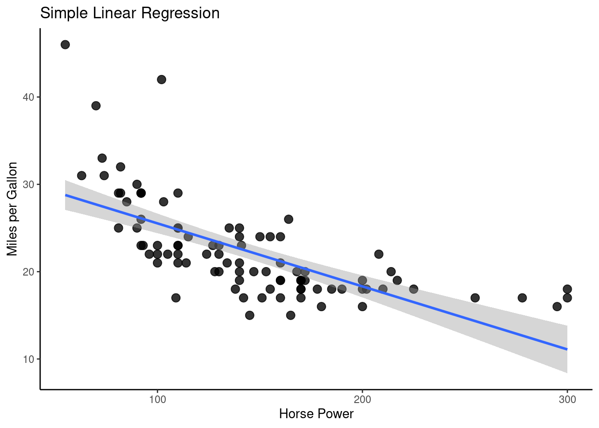
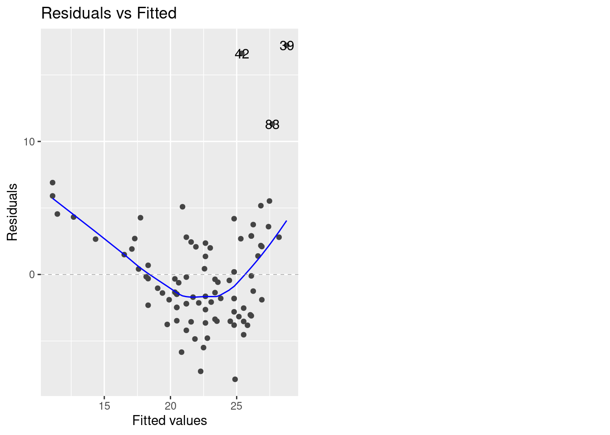
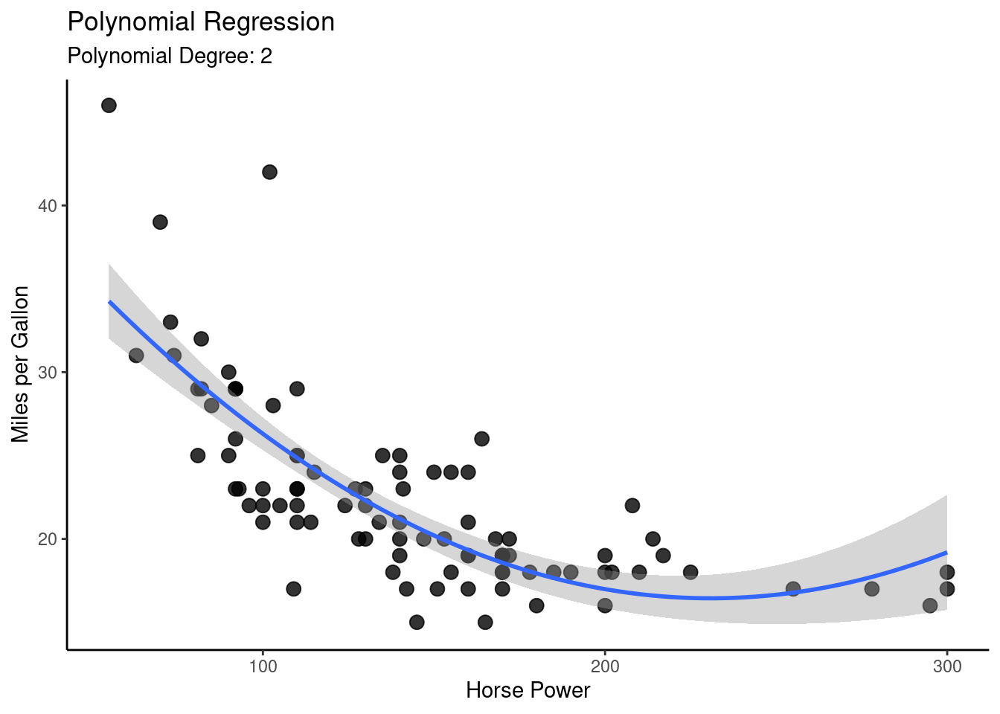
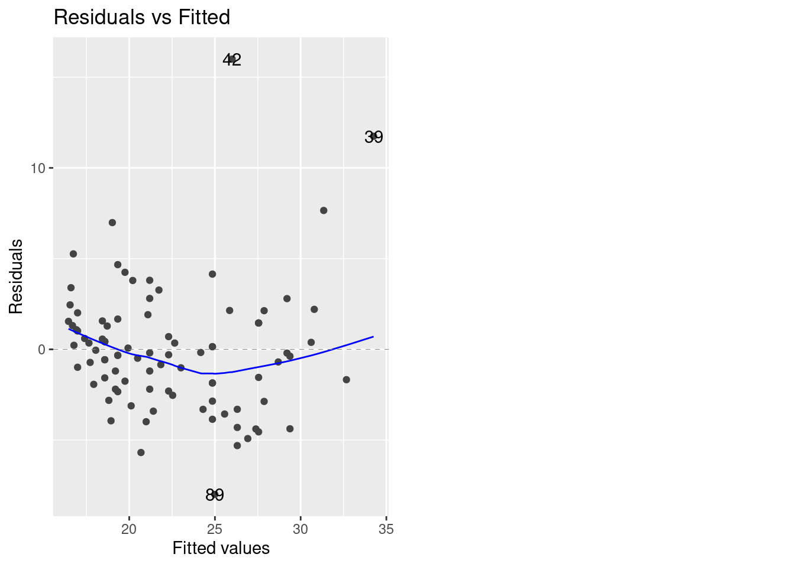

In the following we focus on case of random designs \(X\) (i.e. \(X\) being a random variable), since, first, this is the more relevant case in econometrics and, second, it includes the case of fixed designs (i.e. \(X\) being deterministic) as a special case (“degenerated random variable”). Caution: A random \(X\) requires us to consider conditional means and variances “given \(X\).” That is, if we would be able to resample from the model, we do so by fixing (conditioning on) the in-principle random explanatory variable \(X\).
4.1 Assumptions
The multiple linear regression model is defined by the following assumptions:
Assumption 1: Data Generating Process
Part (a): Linear Model
\[
\begin{align}
Y_i=\sum_{k=1}^K\beta_k X_{ik}+\varepsilon_i, \quad i=1,\dots,n.
\end{align}
\tag{4.1}\] Usually, a constant (intercept) is included, in this case \(X_{i1}=1\) for all \(i\). In the following we will always assume that \(X_{i1}=1\) for all \(i\), unless otherwise stated.
It is convenient to write Equation 4.1 using matrix notation \[\begin{eqnarray*}
Y_i&=&\underset{(1\times K)}{X_i'}\underset{(K\times 1)}{\beta} +\varepsilon_i, \quad i=1,\dots,n,
\end{eqnarray*}\] where \(X_i=(X_{i1},\dots,X_{iK})'\) and \(\beta=(\beta_1,\dots,\beta_K)'\). Stacking all individual rows \(i\) leads to \[\begin{eqnarray*}\label{LM}
\underset{(n\times 1)}{Y}&=&\underset{(n\times K)}{X}\underset{(K\times 1)}{\beta} + \underset{(n\times 1)}{\varepsilon},
\end{eqnarray*}\] where \[\begin{equation*}
Y=\left(\begin{matrix}Y_1\\ \vdots\\Y_n\end{matrix}\right),\quad X=\left(\begin{matrix}X_{11}&\dots&X_{1K}\\\vdots&\ddots&\vdots\\ X_{n1}&\dots&X_{nK}\\\end{matrix}\right),\quad\text{and}\quad \varepsilon=\left(\begin{matrix}\varepsilon_1\\ \vdots\\ \varepsilon_n\end{matrix}\right).
\end{equation*}\]
Part (b): Random Sample
Moreover, we assume that the observed (“obs”) data points \[
((Y_{1,obs},X_{11,obs},\dots,X_{1K,obs}),(Y_{2,obs},X_{21,obs},\dots,X_{2K,obs}),\dots,(Y_{n,obs},X_{n1,obs},\dots,X_{nK,obs}))
\] are realizations of a random sample \[
((Y_{1},X_{11},\dots,X_{1K}),(Y_{2},X_{21},\dots,X_{2K}),\dots,(Y_{n},X_{n1},\dots,X_{nK})).
\]
That is, the \(i\)th observed \(K+1\) dimensional data point \((Y_{i,obs},X_{i1,obs},\dots,X_{iK,obs})\in\mathbb{R}^{K+1}\) is a realization of a \(K+1\) dimensional random variable \((Y_{i},X_{i1},\dots,X_{iK})\in\mathbb{R}^{K+1},\) where
\((Y_{i},X_{i1},\dots,X_{iK})\) has the identical joint distribution as \((Y_{j},X_{j1},\dots,X_{jK})\) for all \(i=1,\dots,n\) and all \(j=1,\dots,n\), and where
\((Y_{i},X_{i1},\dots,X_{iK})\) is independent of \((Y_{j},X_{j1},\dots,X_{jK})\) for all \(i\neq j=1,\dots,n.\)
Note: Due to Equation 4.1, this i.i.d. assumption is equivalent to assuming that the multivariate random variables \((\varepsilon_i,X_{i1},\dots,X_{iK})\in\mathbb{R}^{K+1}\) are i.i.d. across \(i=1,\dots,n\).
Remark: Usually, we do not use a different notation for observed realizations \((Y_{i,obs},X_{i1,obs},\dots,X_{iK,obs})\in\mathbb{R}^{K+1}\) and for the corresponding random variable \((Y_{i},X_{i1},\dots,X_{iK})\in\mathbb{R}^{K+1}\) since often both interpretations (random variable and its realizations) can make sense in the same statement and then it depends on the considered context whether the random variables point if view or the realization point of view applies.
Assumption 2: Exogeneity\[E(\varepsilon_i|X_i)=0,\quad i=1,\dots,n\] This assumption demands that the mean of the random error term \(\varepsilon_i\) is zero irrespective of the realizations of \(X_i\).
This exogeneity assumption is also called “orthogonality assumption” or “mean independence assumption.”
Note: Together with the random sample assumption (Assumption 1, Part (b)) this assumption implies even strict exogeneity \(E(\varepsilon_i|X) = 0\) since we have independence across \(i=1,\dots,n\). Under strict exogeneity, the mean of \(\varepsilon_i\) is zero irrespective of the realizations of \(X_1,\dots,X_n\).
Assumption 3: Rank Condition (no perfect multicollinearity)
\[\operatorname{rank}(X)=K\quad\text{a.s.}\] This assumption demands that the event of one explanatory variable being linearly dependent on the others occurs with a probability equal to zero. (This is the literal translation of the “almost surely (a.s.)” concept.) The assumption implies that \(n\geq K\).
This assumption is a bit dicey and its violation belongs to one of the classic problems in applied econometrics (keywords: multicollinearity, dummy variable trap, variance inflation). The violation of this assumption harms any economic interpretation as we cannot disentangle the explanatory variables’ individual effects on \(Y\). Therefore, this assumption is also often called an “identification assumption.”
Assumption 4: Error distribution
Depending on the context (i.e., parameter estimation vs. hypothesis testing and small \(n\) vs. large \(n\)) there are different more or less restrictive assumptions. Some of the most common ones are the following (roughly order from least to most restrictive):
Conditional Distribution:\(\varepsilon_i|X_i \sim f_{\varepsilon|X}\) for all \(i=1,\dots,n\) and for any distribution \(f_{\varepsilon|X}\) such that \(\varepsilon_i|X_i\) has two (or more) finite moments.
Conditional Normal Distribution:\(\varepsilon_i|X_i \sim \mathcal{N}(0,\sigma^2(X_i))\) for all \(i=1,\dots,n\).
i.i.d.:\(\varepsilon_i\overset{\operatorname{i.i.d.}}{\sim}f_\varepsilon\) for all \(i=1,\dots,n\) and for any distribution \(f_\varepsilon\) such that \(\varepsilon_i\) has two (or more) finite moments. Assuming that the error terms \(\varepsilon_i\) are themselves i.i.d. across \(i=1,\dots,n\) implies that they do not depend on \(X_i\).
i.i.d. Normal: As above, but with \(f=\mathcal{N}(0,1)\), i.e., \(\varepsilon_i\overset{\operatorname{i.i.d.}}{\sim}\mathcal{N}(0,\sigma^2)\) for all \(i=1,\dots,n\).
Spherical errors (“Gauss-Markov assumptions”): The conditional distributions of \(\varepsilon_i|X_i\) may generally depend on \(X_i\), but without affecting the second moments such that \[\begin{align*}
E(\varepsilon_i^2|X_i) &=\sigma^2>0\quad\text{for all }i=1,\dots,n\\
E(\varepsilon_i\varepsilon_j|X)&=0\quad\text{for all }i\neq j\quad\text{with}\quad i=1,\dots,n\quad\text{and}\quad j=1,\dots,n.
\end{align*}\] Thus, here one assumes that, for a given realization of \(X_i\), the error process is uncorrelated (i.e. \(Cov(\varepsilon_i,\varepsilon_j|X)=E(\varepsilon_i\varepsilon_j|X)=0\) for all \(i\neq j\)) and homoskedastic (i.e. \(Var(\varepsilon_i|X)=\sigma^2\) for all \(i\)).
Homoskedastic versus Heteroskedastic Error Terms
The i.i.d. assumption is not as restrictive as it may seem on first sight. It allows for dependence between \(\varepsilon_i\) and \((X_{i1},\dots,X_{iK})\in\mathbb{R}^K\). That is, the error term \(\varepsilon_i\) can have a conditional distribution which depends on \((X_{i1},\dots,X_{iK})\); see Section 2.2.2.5.
The exogeneity assumption (Assumption 2: Exogeneity) requires that the conditional mean of \(\varepsilon_i\) is independent of \(X_i\). Besides this, dependencies between \(\varepsilon_i\) and \(X_{i1},\dots,X_{iK}\) are allowed. For instance, the variance of \(\varepsilon_i\) can be a function of \(X_{i1},\dots,X_{iK}\). If this is the case, \(\varepsilon_i\) is said to be “heteroskedastic.”
Heteroskedastic error terms: The conditional variances \(Var(\varepsilon_i|X_i=x_i)=\sigma^2(x_i)\) are equal to a non-constant variance-function \(\sigma^2(x_i)>0\) which is a function of the realization \(X_i=x_i.\)
Example:\(\varepsilon_i|X_i\sim U[-0.5|X_{i2}|, 0.5|X_{i2}|],\) with \(X_{i2}\sim U[-4,4]\). This error term is mean independent of \(X_i\) since \(E(\varepsilon_i|X_i)=0\), but it has a heteroskedastic conditional variance since \(Var(\varepsilon_i|X_i)=\frac{1}{12}X_i^2\) depends on \(X_i\).
Sometimes, we need to be more restrictive by assuming that also the variances of the error terms \(\varepsilon_i\) are independent from \(X_i\). (Higher moments may still depend on \(X_i\).) This assumption leads to “homoskedastic” error terms.
Homoskedastic error terms: The conditional variances \(Var(\varepsilon_i|X_i=x_i)=\sigma^2\) are equal to some constant \(\sigma^2>0\) for every possible realization \(X_i=x_i.\)
Example: For doing small sample inference (see Chapter 5), we need to assume that the error terms \(\varepsilon_i\) are i.i.d. across \(i=1,\dots,n\) plus the normality assumption, i.e., \(\varepsilon_i\stackrel{\textrm{i.i.d.}}{\sim}{\mathcal N} (0, \sigma^2)\) for all \(i=1,\dots,n\) which leads to homoskedastic variances \(Var(\varepsilon_i|X_i)=\sigma^2\) for every possible realization of \(X_i\).
4.1.1 Some Implications of the Exogeneity Assumption
Theorem 4.1 (Unconditional Mean) If \(E(\varepsilon_i|X_i)=0\) for all \(i=1,\dots,n\), then the also the unconditional mean of the error term is zero, i.e. \[
E(\varepsilon_i)=0,\quad i=1,\dots,n.
\]
Proof. Using the Law of Total Expectations (i.e., \(E[E(Z|X)]=E(Z)\)) we can rewrite \(E(\varepsilon_i)\) as \[
E(\varepsilon_i)=E[E(\varepsilon_i|X_i)]
\] for all \(i=1,\dots,n.\) But the exogeneity assumption yields \[
E[E(\varepsilon_i|X_i)]=E[0]=0
\] for all \(i=1,\dots,n,\) which completes the proof. \(\square\)
Generally, two random variables \(X\) and \(Y\) are said to be orthogonal if their cross moment is zero, i.e. if \(E(XY)=0\). Exogeneity is sometimes also called “orthogonality,” due to the following result.
Theorem 4.2 (Orthogonality) Under exogeneity, i.e. if \(E(\varepsilon_i|X_{i})=0\), the regressors and the error term are orthogonal to each other, i.e, \[
E(X_{ik}\varepsilon_i)=0
\] for all \(i=1,\dots,n\) and \(k=1,\dots,K\).
Proof. \[\begin{align*}
E(X_{ik}\varepsilon_i)
&=E(E(X_{ik}\varepsilon_i|X_{ik}))\quad{\small\text{(By the Law of Total Expectations)}}\\
&=E(X_{ik}E(\varepsilon_i|X_{ik}))\quad{\small\text{(By the linearity of cond.~expectations)}}
\end{align*}\] Now, to show that \(E(X_{ik}\varepsilon_i)=0\), we need to show that \(E(\varepsilon_i|X_{ik})=0,\) which is done in the following:
Since \(X_{ik}\) is an element of \(X_i,\) a slightly more sophisticated use of the Law of Total Expectations (i.e., \(E(Y|X)=E(E(Y|X,Z)|X)\)) implies that \[
E(\varepsilon_i|X_{ik})=E(E(\varepsilon_i|X_i)|X_{ik}).
\] So, the exogeneity assumption, \(E(\varepsilon_i|X_i)=0\) yields \[
E(\varepsilon_i|X_{ik})=E(\underbrace{E(\varepsilon_i|X_i)}_{=0}|X_{ik})=E(0|X_{ik})=0.
\] I.e., we have that \(E(\varepsilon_i|X_{ik})=0\) which allows us to conclude that \[
E(X_{ik}\varepsilon_i)=E(X_{ik}E(\varepsilon_i|X_{ik}))=E(X_{ik}0)=0
\] which completes the proof. \(\square\)
Because the mean of the error term is zero (\(E(\varepsilon_i)=0\) for all \(i\) (see Theorem 4.1), it follows that the orthogonality property, \(E(X_{ik}\varepsilon_i)=0,\) is equivalent to a zero correlation property.
Theorem 4.3 (No Correlation) If \(E(\varepsilon_i|X_{i})=0\), then \[\begin{eqnarray*}
Cov(\varepsilon_i,X_{ik})&=&0\quad\text{for all}\quad i=1,\dots,n\quad\text{and}\quad k=1,\dots,K.
\end{eqnarray*}\]
Proof. \[\begin{eqnarray*}
Cov(\varepsilon_i,X_{ik})&=&E(X_{ik}\varepsilon_i)-E(X_{ik})\,E(\varepsilon_i)\quad{\small\text{(Def. of Cov)}}\\
&=&E(X_{ik}\varepsilon_i)\quad{\small\text{(By point (a): $E(\varepsilon_i)=0$)}}\\
&=&0\quad{\small\text{(By orthogonality result in point (b))}}\quad\square
\end{eqnarray*}\]
4.2 Deriving the Expression of the OLS Estimator
We derive the expression for the OLS estimator \(\hat\beta=(\hat\beta_1,\dots,\hat\beta_K)'\in\mathbb{R}^K\) as the vector-valued minimizing argument of the sum of squared residuals, \(S_n(b)\) with \(b\in\mathbb{R}^K\), for a given sample \(((Y_1,X_1),\dots,(Y_n,X_n))\). In matrix terms this is \[\begin{align*}
S_n(b)&=(Y-X b)^{\prime}(Y-X b)=Y^{\prime}Y-2 Y^{\prime} X b+b^{\prime} X^{\prime} X b.
\end{align*}\] To find the minimizing argument \[\hat\beta=\arg\min_{b\in\mathbb{R}^K}S_n(b)\] we compute all partial derivatives \[
\begin{aligned}
\underset{(K\times 1)}{\frac{\partial S(b)}{\partial b}} &=-2\left(X^{\prime}Y -X^{\prime} Xb\right).
\end{aligned}
\] and set them equal to zero which leads to \(K\) linear equations (the “normal equations”) in \(K\) unknowns. This system of equations defines the OLS estimates, \(\hat{\beta}\), for a given data-set: \[
\begin{aligned}
-2\left(X^{\prime}Y -X^{\prime} X\hat{\beta}\right)=\underset{(K\times 1)}{0}.
\end{aligned}
\] From our rank assumption (Assumption 3) it follows that \(X^{\prime}X\) is an invertible matrix which allows us to solve the equation system by \[
\begin{aligned}
\underset{(K\times 1)}{\hat{\beta}} &=\left(X^{\prime} X\right)^{-1} X^{\prime} Y
\end{aligned}
\]
The following codes computes the estimate \(\hat{\beta}\) for a given realization \((Y,X)\) of the random sample \((Y,X)\).
# Some given dataX_1 <-c(1.9,0.8,1.1,0.1,-0.1,4.4,4.6,1.6,5.5,3.4)X_2 <-c(66, 62, 64, 61, 63, 70, 68, 62, 68, 66)Y <-c(0.7,-1.0,-0.2,-1.2,-0.1,3.4,0.0,0.8,3.7,2.0)dataset <-cbind.data.frame(X_1,X_2,Y)## Compute the OLS estimationmy.lm <-lm(Y ~ X_1 + X_2, data = dataset)## Plot sample regression surfacelibrary("scatterplot3d") # library for 3d plotsplot3d <-scatterplot3d(x = X_1, y = X_2, z = Y,angle=33, scale.y=0.8, pch=16,color ="red", main ="OLS Regression Surface")plot3d$plane3d(my.lm, lty.box ="solid", col=gray(.5), draw_polygon=TRUE)
4.3 Some Quantities of Interest
Predicted values and residuals.
The (OLS) predicted values: \(\hat{Y}_i=X_i'\hat\beta\).
In matrix notation: \(\hat Y=X\underbrace{(X'X)^{-1}X'Y}_{\hat\beta}=P_X Y\)
The (OLS) residuals: \(\hat\varepsilon_i=Y_i-\hat{Y}_i\). In matrix notation: \(\hat\varepsilon=Y-\hat{Y}=\left(I_n-X(X'X)^{-1}X'\right)Y=M_X Y\)
Projection matrices.
The matrix \[
P_X=X(X'X)^{-1}X'
\] is the \((n\times n)\)projection matrix that projects any vector from \(\mathbb{R}^n\) into the column space spanned by the column vectors of \(X\) and \[
M_X=I_n-X(X'X)^{-1}X'=I_n-P_X
\] is the associated \((n\times n)\)orthogonal projection matrix that projects any vector from \(\mathbb{R}^n\) into the vector space that is orthogonal to that spanned by \(X\).
The projection matrices \(P_X\) and \(M_X\) have some nice properties:
\(P_X\) and \(M_X\) are symmetric, i.e. \(P_X=P_X'\) and \(M_X=M_X'\).
\(P_X\) and \(M_X\) are idempotent, i.e. \(P_XP_X=P_X\) and \(M_X M_X=M_X\).
Moreover, we have that \(X'P_X=X'\), \(P_XX=X\), \(X'M_X=0\), \(M_XX=0\), and \(P_XM_X=0\).
All of these properties follow directly from the definitions of \(P_X\) and \(M_X\) (check it out). Using these properties one can show that the residual vector \(\hat\varepsilon=(\hat\varepsilon_1,\dots,\hat\varepsilon_n)'\) is orthogonal to each of the column vectors in \(X\), i.e \[\begin{eqnarray}
X'\hat\varepsilon&=&X'M_XY\quad\text{\small(By Def.~of $M_X$)}\\
\Leftrightarrow X'\hat\varepsilon&=&\underset{(K\times n)}{0}\underset{(n\times 1)}{Y}\quad\text{\small(since $X'M_X=0$)}\\
\Leftrightarrow X'\hat\varepsilon&=&\underset{(K\times 1)}{0}
\end{eqnarray}\] Note that, in the case with intercept, the result \(X'\hat\varepsilon=0\) implies that \(\sum_{i=1}^n\hat\varepsilon_i=0\). Moreover, the equation \(X'\hat\varepsilon=0\) implies also that the residual vector \(\hat{\varepsilon}\) is orthogonal to the predicted values vector, since \[\begin{align*}
X'\hat\varepsilon&=0\\
\Rightarrow\;\hat\beta'X'\hat\varepsilon&=\hat\beta'0\\
\Leftrightarrow\;\hat Y'\hat\varepsilon&=0.
\end{align*}\]
Another insight from equation \(X'\hat\varepsilon=0\) is that the vector \(\hat\varepsilon\) has to satisfy \(K\) linear restrictions which means it looses \(K\) degrees of freedom.1 Consequently, the vector of residuals \(\hat\varepsilon\) has only \(n-K\) so-called degrees of freedom. This loss of \(K\) degrees of freedom also appears in the definition of the unbiased variance estimator \[\begin{align}
s_{UB}^2&=\frac{1}{n-K}\sum_{i=1}^n\hat\varepsilon_i^2\label{EqVarEstim}.
\end{align}\]
Variance decomposition: A further useful result that can be shown using the properties of \(P_X\) and \(M_X\) is that \(Y'Y=\hat{Y}'\hat{Y}+\hat\varepsilon'\hat\varepsilon\), i.e. \[\begin{eqnarray*}
Y'Y&=&(\hat Y+\hat\varepsilon)'(\hat Y+\hat\varepsilon)\notag\\
&=&(P_XY+M_XY)'(P_XY+M_XY)\notag\\
&=&(Y'P_X'+Y'M_X')(P_XY+M_XY)\notag\\
&=&Y'P_X'P_XY+Y'M_X'M_XY+0\notag\\
&=&\hat{Y}'\hat{Y}+\hat\varepsilon'\hat\varepsilon
\end{eqnarray*}\] The decomposition \[
\hat{Y}'\hat{Y}+\hat\varepsilon'\hat\varepsilon
\] is the basis for the well-known variance decomposition result for OLS regressions.
Theorem 4.4 For the linear OLS regression model Equation 4.1 with intercept, the total sample variance of the dependent variable \(Y_1,\dots,Y_n\) can be decomposed as following: \[\begin{eqnarray}
\underset{\text{total sample variance}}{\frac{1}{n}\sum_{i=1}^n\left(Y_i-\bar{Y}\right)^2}&=&\underset{\text{explained sample variance}}{\frac{1}{n}\sum_{i=1}^n\left(\hat{Y}_i-\bar{\hat{Y}}\right)^2}+\underset{\text{unexplained sample variance}}{\frac{1}{n}\sum_{i=1}^n\hat\varepsilon_i^2,}\label{VarDecomp}
\end{eqnarray}\] where \(\bar{Y}=\frac{1}{n}\sum_{i=1}^nY_i\) and \(\bar{\hat{Y}}=\frac{1}{n}\sum_{i=1}^n\hat{Y}_i\).
Proof. From equation \(X'\hat\varepsilon=0\) we have for regressions with intercept that \(\sum_{i=1}^n\hat\varepsilon_i=0\). Hence, from \(Y_i=\hat{Y}_i+\hat\varepsilon_i\) it follows that \[\begin{eqnarray*}
\frac{1}{n}\sum_{i=1}^n Y_i&=&\frac{1}{n}\sum_{i=1}^n \hat{Y}_i+\frac{1}{n}\sum_{i=1}^n \hat\varepsilon_i\\
\bar{Y}&=&\bar{\hat{Y}}+0
\end{eqnarray*}\]
Using the decomposition \(Y'Y=\hat{Y}'\hat{Y}+\hat\varepsilon'\hat\varepsilon\), we can now derive the result: \[\begin{eqnarray*}
Y'Y&=&\hat{Y}'\hat{Y}+\hat\varepsilon'\hat\varepsilon\\
Y'Y-n\bar{Y}^2&=&\hat{Y}'\hat{Y}-n\bar{Y}^2+\hat\varepsilon'\hat\varepsilon\\
Y'Y-n\bar{Y}^2&=&\hat{Y}'\hat{Y}-n\bar{\hat{Y}}^2+\hat\varepsilon'\hat\varepsilon\quad\text{(by $\bar{Y}=\bar{\hat{Y}}$)}\\
\sum_{i=1}^nY_i^2-n\bar{Y}^2&=&\sum_{i=1}^n\hat{Y}_i^2-n\bar{\hat{Y}}^2+\sum_{i=1}^n\hat\varepsilon_i^2\\
\sum_{i=1}^n(Y_i-\bar{Y})^2&=&\sum_{i=1}^n(\hat{Y}_i-\bar{\hat{Y}})^2+\sum_{i=1}^n\hat\varepsilon_i^2\quad\square\\
\end{eqnarray*}\]
Coefficients of determination: \(R^2\) and \(\overline{R}^2\)
The larger the proportion of the explained variance, the better is the fit of the model. This motivates the definition of the so-called \(R^2\) coefficient of determination: \[\begin{eqnarray*}
R^2=\frac{\sum_{i=1}^n\left(\hat{Y}_i-\bar{\hat{Y}}\right)^2}{\sum_{i=1}^n\left(Y_i-\bar{Y}\right)^2}\;=\;1-\frac{\sum_{i=1}^n\hat{\varepsilon}_i^2}{\sum_{i=1}^n\left(Y_i-\bar{Y}\right)^2}
\end{eqnarray*}\] Obviously, we have that \(0\leq R^2\leq 1\). The closer \(R^2\) lies to \(1\), the better is the fit of the model to the observed data. However, a high/low \(R^2\) does not mean a validation/falsification of the estimated model. Any relation (i.e., model assumption) needs a plausible explanation from relevant economic theory. The most often criticized disadvantage of the \(R^2\) is that additional regressors (relevant or not) will always increase the \(R^2\). Here is an example of the problem.
set.seed(123)n <-100# Sample sizeX <-runif(n, 0, 10) # Relevant X variableX_ir <-runif(n, 5, 20) # Irrelevant X variableerror <-rt(n, df =10)*10# True errorY <-1+5* X + error # Y variablelm1 <-summary(lm(Y~X)) # Correct OLS regression lm2 <-summary(lm(Y~X+X_ir))# OLS regression with X_ir lm1$r.squared < lm2$r.squared
[1] TRUE
So, \(R^2\) increases here even though X_ir is a completely irrelevant explanatory variable. Because of this, the \(R^2\) cannot be used as a criterion for model selection. Possible solutions are given by penalized criterions such as the so-called adjusted\(R^2\), \(\overline{R}^2,\) defined as \[\begin{eqnarray*}
\overline{R}^2&=&1-\frac{\frac{1}{n-K}\sum_{i=1}^n\hat{\varepsilon}^2_i}{\frac{1}{n-1}\sum_{i=1}^n\left(Y_i-\bar{Y}\right)^2}\leq R^2%\\
%=\dots=
%&=&1-\frac{n-1}{n-K}\left(1-R^2\right)\quad{\small\text{(since $1-R^2=(\sum_i\hat\varepsilon_i^2)/(\sum_i(Y_i-\bar{Y}))$)}}\\
%&=&1-\frac{n-1}{n-K}+\frac{n-1}{n-K}R^2\quad+\frac{K-1}{n-K}R^2-\frac{K-1}{n-K}R^2\\
%&=&1-\frac{n-1}{n-K}+R^2\quad+\frac{K-1}{n-K}R^2\\
%&=&-\frac{K-1}{n-K}+R^2\quad+\frac{K-1}{n-K}R^2\\
%&=&R^2-\underbrace{\frac{K-1}{n-K}\left(1-R^2\right)}_{\geq 0\;\text{and}\;\leq(K-1)/(n-K)}\;\leq\;R^2
\end{eqnarray*}\] The adjustment is in terms of the degrees of freedom \(n-K\).
4.4 Method of Moments Estimator
The methods of moments estimator exploits the exogeneity assumption that \(E(\varepsilon_i|X_i)=0\) for all \(i=1,\dots,n\) (Assumption 2). Remember that \(E(\varepsilon_i|X_i)=0\) implies that \(E(X_{ik}\varepsilon_i)=0\) for all \(i=1,\dots,n\) and all \(k=1,\dots,K\). The fundamental idea behind “method of moments estimation” is to use the sample analogues of the population moment restrictions \(E(X_{ik}\varepsilon_i)=0\), \(k=1,\dots,K,\) for deriving the estimator: \[
\begin{array}{c||c}
\text{$K$ population moment restrictions\quad}&\text{$K$ sample moment restrictions}\\[2ex]
\left.\begin{array}{c}
E(\varepsilon_i)=0\\
E(X_{i2}\varepsilon_i)=0\\
\vdots\\
E(X_{iK}\varepsilon_i)=0
\end{array}
\right\}\Leftrightarrow E(X_i\varepsilon_i)=\underset{(K\times 1)}{0} &
\left.\begin{array}{c}
\displaystyle
\frac{1}{n}\sum_{i=1}^n\hat\varepsilon_i=0\\
\displaystyle
\frac{1}{n}\sum_{i=1}^nX_{i2}\hat\varepsilon_i=0\\
\vdots\\
\displaystyle
\frac{1}{n}\sum_{i=1}^nX_{iK}\hat\varepsilon_i=0\\
\end{array}
\right\}\Leftrightarrow \displaystyle\frac{1}{n}\sum_{i=1}^nX_i\hat\varepsilon_i=\underset{(K\times 1)}{0}
\end{array}
\]
4.5 Practice: (Non-)Linearity of the Regression Line
car_data <-read.csv(file ="https://cdn.rawgit.com/lidom/Teaching_Repo/bc692b56/autodata.csv")my_car_df <-data.frame("MPG"= car_data$MPG.city,"HP"= car_data$Horsepower,"HP_sq"= car_data$Horsepower^2)lm_obj_1 <-lm(MPG ~ HP, data = my_car_df)lm_obj_2 <-lm(MPG ~ HP + HP_sq, data = my_car_df)par(mfrow=c(2,2))plot(y=my_car_df$MPG, x=my_car_df$HP, main ="Simple Linear Regression",xlab ="Horse Power", ylab ="Miles per Gallon")abline(lm_obj_1)plot(lm_obj_1, which=1, main ="Simple Linear Regression")plot(y=my_car_df$MPG, x=my_car_df$HP,main ="Polynomial Regression (Degree: 2)",xlab ="Horse Power", ylab ="Miles per Gallon")X_seq <-seq(from =min(my_car_df$HP), to =max(my_car_df$HP), len =25)lines(y =predict(lm_obj_2, newdata=data.frame("HP"= X_seq, "HP_sq"= X_seq^2)), x = X_seq)plot(lm_obj_2, which=1, main ="Polynomial Regression (Degree: 2)")

## install.packages("tidyverse")## install.packages("ggfortify")## install.packages("ggfortify")suppressPackageStartupMessages(library("tidyverse"))library("ggfortify") # tidy diagnostic plotscar_data <- readr::read_csv(file ="https://cdn.rawgit.com/lidom/Teaching_Repo/bc692b56/autodata.csv",show_col_types =FALSE)my_car_df <- car_data |> dplyr::mutate("MPG"= MPG.city, "HP"= Horsepower, "HP_sq"= Horsepower^2)## Simple Linear Regressionlm_obj_1 <-lm(MPG ~ HP, data = my_car_df)## Plot: Simple Linear Regressionmy_car_df |>ggplot(aes(x=HP, y=MPG)) +geom_point(alpha=0.8, size=3)+stat_smooth(method='lm', formula = y~x) +theme_classic() +labs(x ="Horse Power", y ="Miles per Gallon", title ="Simple Linear Regression")

## Diagnostic Plot: Simple Linear Regression autoplot(lm_obj_1, which =1)

## Polynomial Regressionlm_obj_2 <-lm(MPG ~ HP + HP_sq, data = my_car_df)## Plot: Polynomial Regressionmy_car_df |>ggplot(aes(x=HP, y=MPG)) +geom_point(alpha=0.8, size=3)+stat_smooth(method='lm', formula = y~poly(x, 2, raw =TRUE)) +theme_classic() +labs(x ="Horse Power", y ="Miles per Gallon", title ="Polynomial Regression", subtitle ="Polynomial Degree: 2")

## Diagnostic Plot: Polynomial Regressionautoplot(lm_obj_2, which =1)

The \(K\) linear restrictions follow from the fact that \(X'\hat\varepsilon=0\) are \(K\) equations \(\sum_{i=1}^nX_{ik}\hat\varepsilon_i=0\) for \(k=1,\dots,K\).↩︎